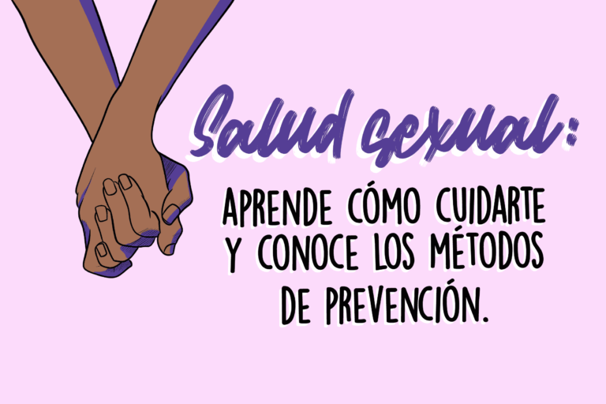

Prevención

La prevención en la salud sexual es el conjunto de medidas, hábitos y acciones que permiten reducir los riesgos relacionados con la sexualidad y proteger el bienestar físico, mental y emocional de las personas. Su objetivo principal es evitar las infecciones de transmisión sexual (ITS), prevenir embarazos no planificados y promover una sexualidad responsable, segura e informada. La prevención es fundamental en todas las etapas de la vida, ya que permite adquirir conocimientos sobre el cuerpo, comprender los riesgos, reconocer situaciones que pueden afectar nuestra salud y tomar decisiones conscientes. Para lograrlo, es importante contar con información confiable, mantener una comunicación respetuosa, conocer los métodos de protección disponibles y acudir a profesionales de la salud cuando existan dudas o preocupaciones.
Una de las principales medidas de prevención es el uso correcto y constante del preservativo durante las relaciones sexuales, ya que ayuda a reducir el riesgo de muchas infecciones de transmisión sexual y de embarazos. Existen preservativos externos e internos, que deben utilizarse siguiendo las instrucciones correspondientes y empleando uno nuevo en cada relación sexual. También es importante revisar que el envoltorio esté intacto y que el producto no haya caducado. Aunque los preservativos ofrecen una protección importante, no eliminan completamente el riesgo de todas las infecciones, especialmente aquellas que pueden transmitirse por el contacto con zonas de piel no cubiertas. Por esta razón, es recomendable complementar su uso con otras medidas preventivas, como la vacunación, las pruebas de detección y la orientación médica.
Otra medida importante es la prevención de las infecciones de transmisión sexual, entre las que se encuentran el VIH, la sífilis, la gonorrea, la clamidia, el herpes genital, el virus del papiloma humano y la hepatitis B. Algunas de estas infecciones pueden no presentar síntomas, por lo que una persona puede tener una infección sin saberlo. Para reducir los riesgos, es importante utilizar preservativos correctamente, realizarse pruebas de detección cuando corresponda, recibir las vacunas recomendadas contra el virus del papiloma humano y la hepatitis B y buscar atención sanitaria ante una posible exposición. También es fundamental evitar la automedicación y seguir las indicaciones de los profesionales sanitarios cuando se diagnostica una infección. La prevención debe estar acompañada de información científica y de una actitud respetuosa, sin prejuicios ni discriminación hacia las personas que viven con alguna ITS.
La prevención de embarazos no planificados también forma parte de la salud sexual. Para ello, existen diferentes métodos anticonceptivos, como las píldoras, las inyecciones, los implantes, los dispositivos intrauterinos y los preservativos. Cada método tiene características particulares, por lo que es recomendable informarse sobre su funcionamiento, eficacia, beneficios y posibles limitaciones antes de elegir uno. La orientación de un profesional de la salud puede ayudar a encontrar una opción adecuada para las necesidades de cada persona. Es importante recordar que la mayoría de los métodos anticonceptivos previenen el embarazo, pero no protegen contra las infecciones de transmisión sexual. Por eso, el uso del preservativo puede ser importante incluso cuando se utiliza otro método anticonceptivo. Asimismo, la anticoncepción de emergencia puede ayudar a prevenir un embarazo después de una relación sexual sin protección o de un fallo anticonceptivo, y debe utilizarse lo antes posible siguiendo las indicaciones sanitarias.